重點摘要 Key points
- 同一個症狀，貓和狗背後的疾病不一樣：持續性角膜炎（keratitis），狗先找沒處理掉的局部原因，貓則要把貓疱疹病毒第一型（Feline herpesvirus-1, FHV-1）放在鑑別清單前面；虹膜（iris）變黑，狗很少轉移（metastasis），貓若持續進展預後差；視網膜剝離（retinal detachment），狗想著找裂孔做手術，貓先想全身性高血壓。
- FHV-1 的目標是「控制」不是「根除」：病毒終身潛伏（latency）在三叉神經節（trigeminal ganglion），壓力或免疫抑制（immunosuppression）就復發；抗病毒（antiviral）藥只抑制複製（virostatic）、對潛伏病毒沒作用，緩解後不要減量或停藥。沒有樹枝狀潰瘍（ulcer）也不能排除 FHV-1。
- 亂用「消炎」眼藥可能讓貓更糟：病例 2（Neko）有胃淋巴瘤（lymphoma）＋化療＋口服類固醇，又頻繁點 NSAID 眼藥，結果 FHV-1 失控、第三眼瞼（third eyelid）糜爛，最後過世；免疫支持與避免刺激性藥物、防腐劑（preservative）毒性才是關鍵。
- 虹膜黑斑要「記錄、評估風險、再決定手術」：瀰漫性虹膜黑色素瘤（Feline Diffuse Iris Melanoma, FDIM）轉移率 19–63%，分期靠組織學的基質侵犯；虹膜切片（iris biopsy）「陽性」可支持摘除（enucleation），「陰性」不能當作安心繼續等的理由；虹膜表面的連續攝影（serial photography）本身就是風險評估的一部分。
- 貓的視網膜剝離先量血壓（blood pressure）：老貓急性雙側失明 → 先量血壓、檢查眼底（fundus）。高血壓（hypertension）最常見，多繼發於慢性腎臟病（CKD）或甲狀腺機能亢進（hyperthyroidism）；視網膜（retina）／脈絡膜（choroid）出血或剝離已是標的器官損傷（Target Organ Damage, TOD），不必等重複測量就開始治療，amlodipine 起效快；早治療視力可恢復（約 57.6% 入院時失明的眼睛恢復視力），但光受器（photoreceptor）退化可能讓視力不完全回來。
總覽：貓眼的三個臨床陷阱 The Unique Feline Eye: three clinical traps
本頁整理自 FASAVA 2026（台北）「The Unique Feline Eye」演講（講者 Yoshitaka Kobayashi，Animal Eye Care — Tokyo Animal Eye Clinic），主軸是用「貓的邏輯」而不是「狗的邏輯」處理眼表（ocular surface）、葡萄膜（uvea）與眼底（fundus）三類疾病。
同一個症狀，狗與貓的思路不同 — Species differences in feline ophthalmology
| 臨床表現 | 狗的邏輯 | 貓的邏輯 |
|---|---|---|
| 持續性角膜炎（keratitis） | 找沒解決的局部原因 | FHV-1 潛伏（latency）／再活化仍排在清單前面 |
| 虹膜（iris）色素沉著 | 轉移（metastasis）少見 | 若持續進展，轉移風險高、預後差 |
| 視網膜剝離（retinal detachment） | 找裂孔、考慮手術 | 先想全身性高血壓 |
本頁結構
貓角膜結膜炎（keratoconjunctivitis）與 FHV-1：診斷思路、治療藥物、兩個病例、輔助處置。
FDIM：病理分期、摘除（enucleation）時機、虹膜切片（iris biopsy）、前眼節 OCT、二極體雷射。
視網膜剝離鑑別（感染／腫瘤（tumor））與高血壓脈絡視網膜病變。
不少「建議」是講者個人臨床經驗（講義標示 My pick、presenter 的詮釋），非驗證過的診斷準則，頁面中會標出。
貓角膜結膜炎與 FHV-1 Feline keratoconjunctivitis
病毒性角膜炎（keratitis）在狗很少是預設解釋，在貓卻是第一線考量。
A herpesvirus-aware approach to diagnosis and long-term control.
- 不明原因的貓淺層潰瘍（ulcer）或慢性角膜結膜炎（keratoconjunctivitis），FHV-1 是第一線考量。
- 排除鑑別診斷：短頭（brachycephalic）、內翻（entropion）、眼瞼（eyelid）疾病、全身疾病。
- FHV-1 終身潛伏（latency），復發是預期中的事——每次復發都要重新想有沒有別的原因。
- 目標是控制不是治癒：抗病毒（antiviral）＋輔助治療，並向飼主說清楚。
FHV-1 的眼部表現 — Ocular manifestations of FHV-1
📎 以下為講義頁面截圖，原始頁碼：講義 p.6–9（臨床照片：病毒性角膜炎、樹枝狀潰瘍、黑色壞死與嗜酸性角膜炎）；p.15（披衣菌、內翻、眼內淋巴瘤的對照照片）。
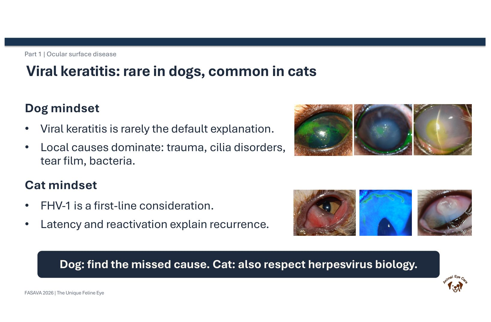
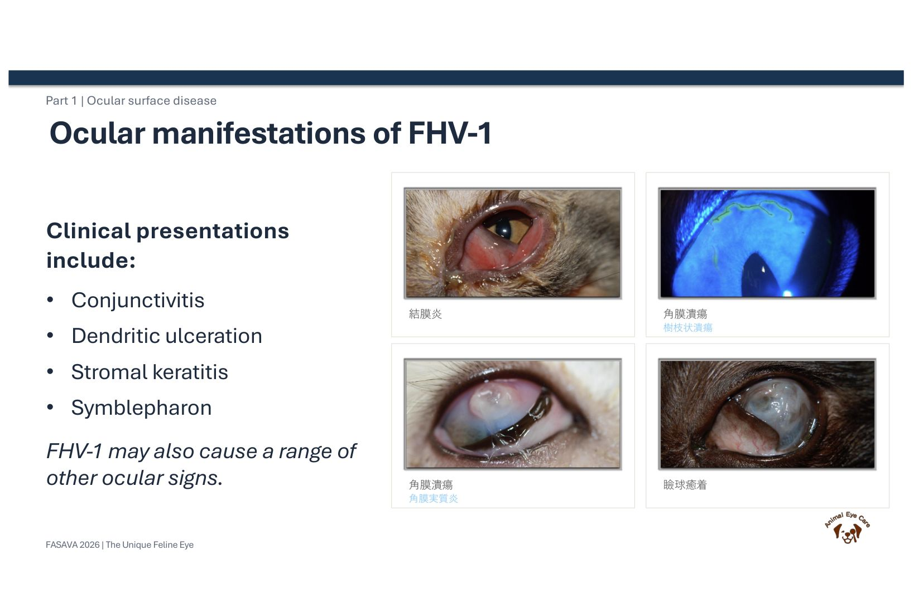
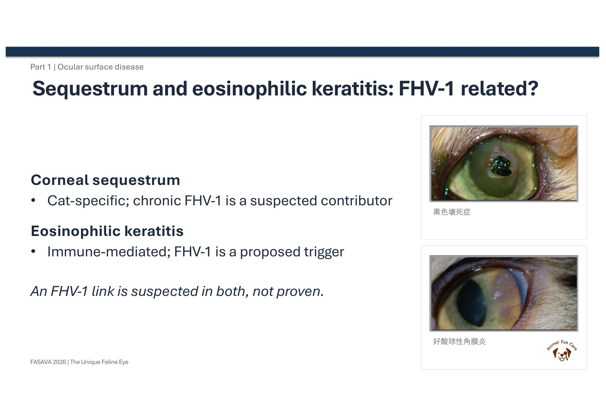
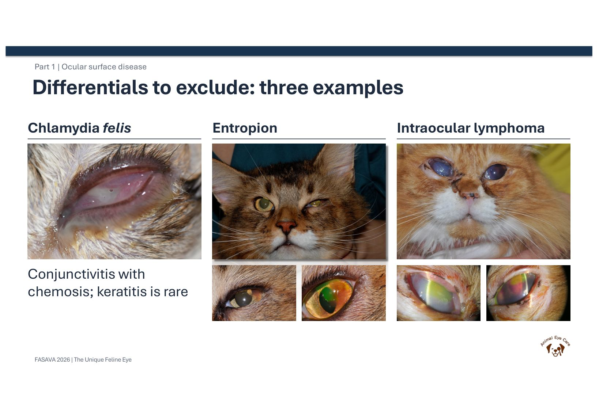
- 結膜（conjunctiva）炎、樹枝狀潰瘍（dendritic ulcer）、基質性角膜炎（stromal keratitis）、瞼球黏連（symblepharon）。
- 沒有樹枝狀潰瘍不能排除 FHV-1：診斷是機率性的，反覆潰瘍就該用「疱疹病毒思維」。
- 角膜黑色壞死（corneal sequestrum）：貓特有，慢性 FHV-1 為疑似因子；嗜酸性角膜炎（eosinophilic keratitis）：免疫媒介，FHV-1 為推測的誘發因子。兩者的 FHV-1 關聯都是「懷疑、未證實」。
先懷疑 FHV-1，但要排除其他
多數貓都潛伏感染，沒有任何檢測能排除，因此把 FHV-1 當作「工作診斷」；但懷疑不等於診斷，要排除：
| 要排除的鑑別 | 備註（依講義） |
|---|---|
| 披衣菌（Chlamydia felis）等其他感染 | 結膜炎伴結膜水腫（chemosis），角膜炎少見 |
| 眼瞼或暴露刺激（如內翻） | 短頭貓常見內側眼角內翻 |
| 淚膜（tear film）異常 | 短頭貓蒸發過強型乾眼（dry eye） |
| 神經性疾病（顏面或三叉神經麻痺） | — |
| 異物（foreign body）、外傷 | — |
| 眼內淋巴瘤 | 講義舉為一個需排除的例子 |
Frejlich 2025（法國轉診中心，n = 1,620）：短頭貓相較非短頭貓，角膜（cornea）潰瘍勝算比（odds ratio, OR） 3.0、角膜黑色壞死 9.0。推測主因為角膜感覺遲鈍（hypoesthesia）、蒸發過強型乾眼、內翻（常在內側眼角）。
FHV-1 的病程與角膜黑色壞死、嗜酸性角膜炎的處理
- 感染與潛伏：幾乎所有暴露過的貓都會變成持續感染，之後不少貓會復發；初次感染後病毒沿三叉神經末梢進到三叉神經節（trigeminal ganglion）潛伏。角膜本身是否也會潛伏仍有爭議：有一項 RT-PCR 研究在正常貓角膜沒找到潛伏轉錄物；也有研究提出睫狀神經節（ciliary ganglion）是額外的潛伏位置。（JFMS 回顧；PMC11107991；PMC4016492）
- 急性期角膜病灶：點狀與樹枝狀上皮潰瘍（punctate and dendritic epithelial ulcers），實驗感染中可持續到約 24 天。
- 角膜黑色壞死（corneal sequestrum）：FHV-1 是可能的促成因子，但不是已證實的唯一原因。一項 PCR 研究在有黑色壞死的貓角膜找到病毒的比例是 55.1%，正常貓是 5.9%；有學者認為黑色壞死是角膜基質受到大量傷害後的非特異反應。通常以手術處理：暫時性眼瞼縫合（tarsorrhaphy）、薄層結膜瓣（conjunctival graft）或板層角膜移植（lamellar corneal graft）可降低復發。疱疹性潰瘍的貓要避免淺層角膜切開術或角膜磨削，可能誘發黑色壞死並延遲上皮癒合，與講義「網格切開不加速癒合、增加黑色壞死風險」一致。（VIN：Feline Corneal Sequestrum）
- 嗜酸性角膜炎（eosinophilic keratitis）：病因未明，FHV-1 是可能誘發因子之一；一線治療是局部類固醇（corticosteroid）與環孢素（cyclosporine），一天兩次；局部治療反應不佳或無法點藥的貓才用全身用藥，醋酸甲地孕酮（megestrol acetate）有效但有糖尿病、子宮蓄膿、乳腺腫瘤風險，通常留給不能耐受局部治療的貓。因為病毒角色不明，有些醫師會加 famciclovir。（VIN；臨床通訊）
- FHV-1 的 PCR 檢測有限制：會有偽陽性與偽陰性，很大比例的貓是帶原者，所以很難用檢測直接證明因果——這是講義要把 FHV-1 當「工作診斷」的原因。
FHV-1 治療與復發管理 Treatment and long-term control
抗病毒（antiviral）＋眼表（ocular surface）保護＋免疫支持＋減壓，並接受「復發是常態」。
抗病毒藥、干擾素（interferon）、L-離胺酸（L-lysine）。
眼表保護、免疫刺激、益生菌（probiotics）、減少壓力。
藥物比較
| 藥物 | 途徑與劑量（講義） | 重點 |
|---|---|---|
| Famciclovir | 90 mg/kg PO q12h（藥動學依 Sebbag 2016；Merck 為 q8–12h） | Penciclovir 的前驅藥（prodrug），講義評為「非常有效且安全」，但吸收、代謝與排泄機制複雜。59 隻貓資料：90 mg/kg TID 比 40 mg/kg TID 改善更快更多；用過 10 天到 16 歲的貓；2024 年 RCT（373 隻幼貓，90 mg/kg BID × 21 天）緩解更快。輕微副作用 10/59（腹瀉 4、食慾下降 2、嘔吐 1、體重減輕 1、多飲 2），其中 5/10 為 ≥10 歲老貓、<7 月齡無。 |
| Idoxuridine（IDU，Senju） | 點眼 1 滴，每日 6 次，間隔至少 1 小時；0.1% 溶液／0.5% 藥膏 | 非專一性抑制 DNA 合成，也影響宿主細胞，不能全身給藥，可能有角膜（cornea）毒性；對貓有效且副作用少。 |
| 干擾素（局部） | — | 誘導細胞內抗病毒蛋白；文獻療效不一。 |
| L-lysine | 500 mg PO SID–BID，長期 | 攝取不穩、效益未證實。 |
| 玻尿酸鈉（sodium hyaluronate）講者首選 | 病例中 6 次／日點眼 | 症狀緩解後杯狀細胞（goblet cells）仍維持減少（資料為感染後 30 天），所以要長期保護眼表。 |
| 益生菌 E. faecium SF68 講者首選 | FortiFlora（病例） | 慢性 FHV-1 貓結膜（conjunctiva）炎天數減少；風險低；僅一項小型研究。 |
出處（講義標示）：Lappin 2009 J Feline Med Surg；ABCD guideline；劑量為講義所載，臨床使用請依最新仿單與院內處方。
為什麼會復發：終身潛伏（latency）
- 潛伏感染形成於三叉神經節（trigeminal ganglion），自主神經節也可能藏病毒（Townsend 2013, BMC Vet Res）。
- 壓力或免疫抑制（immunosuppression）會誘發復發；復發反映病毒潛伏，不一定是治療失敗。
- 抗病毒藥是抑制複製的藥（virostatic），劑量必須足夠、對潛伏病毒無效、緩解後繼續不要減量。
輔助處置：越少越好 — Procedures and light therapy: minimal, and adjunctive
| 處置 | 講義重點 |
|---|---|
| 清創（debridement）與角膜切開術（keratotomy） | 網格狀角膜切開（grid keratotomy）不會加速癒合，反而提高黑色壞死（sequestrum）風險；鑽石磨頭＋隱形眼鏡癒合率 81%，但要先討論黑色壞死風險。 |
| PACK-CXL（角膜交聯（corneal cross-linking）） | 藥物治療的輔助；深層潰瘍（ulcer）仍需手術；失敗風險：短頭（brachycephalic）、較老、潰瘍較深；貓沒有隨機對照試驗（randomized controlled trial, RCT）。 |
| UV-C 光療 | 數秒曝光、不需光敏劑，抗菌輔助；沒有貓的安全性資料，需要對照試驗。 |
Famciclovir 劑量與局部抗病毒藥的其他資料
- Famciclovir 是 penciclovir 的前驅藥，文獻普遍認為安全有效，但因為貓的藥動學複雜，準確的口服劑量並未定論；常被引用的臨床處方是 90 mg/kg 一天三次（TID），講義列的是 q12h（依 Sebbag 2016）與 Merck 的 q8–12h，三者並不一致，開處方前請對照最新資料。早期曾有比較認為 40 mg/kg 在部分結果上與 90 mg/kg 相當，但後續報告顯示高劑量改善較快。
- 收容所入所時單次給 125 mg 或 500 mg famciclovir，並沒有降低臨床症狀或排毒——不能拿來當預防用藥。（Ofri 回顧；MSPCA 治療回顧）
- 局部抗病毒藥：體外貓細胞研究顯示 1% trifluridine 最有效，idoxuridine（IDU）刺激性較小且較便宜；L-lysine 有人長期口服來降低復發頻率與嚴重度，證據有限，與講義「攝取不穩、效益未證實」的態度一致。
眼表病例：Lyli 與 Neko Ocular surface cases
同樣是 FHV-1 角膜結膜炎（keratoconjunctivitis），一隻處理得當、一隻因全身狀況與不當用藥而惡化。
病例 1「Lyli」：波斯貓，6 歲，結紮母
📎 以下為講義頁面截圖，原始頁碼：講義 p.10–13（初診照片）、p.22（治療用藥照片）、p.23（第 10 天改善）。
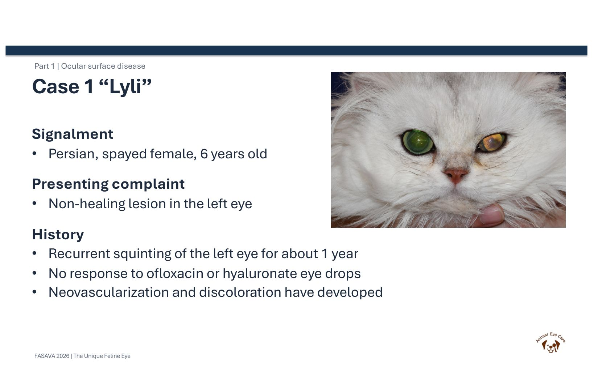
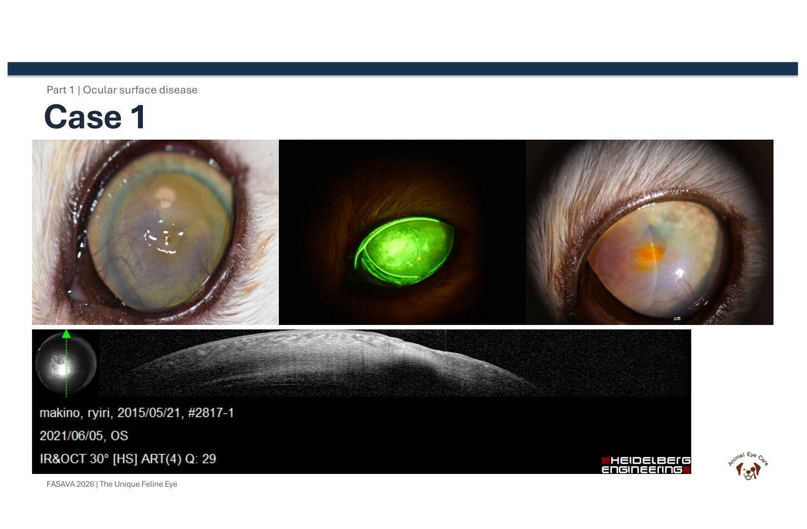
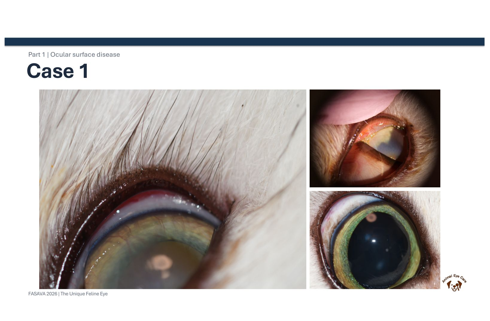
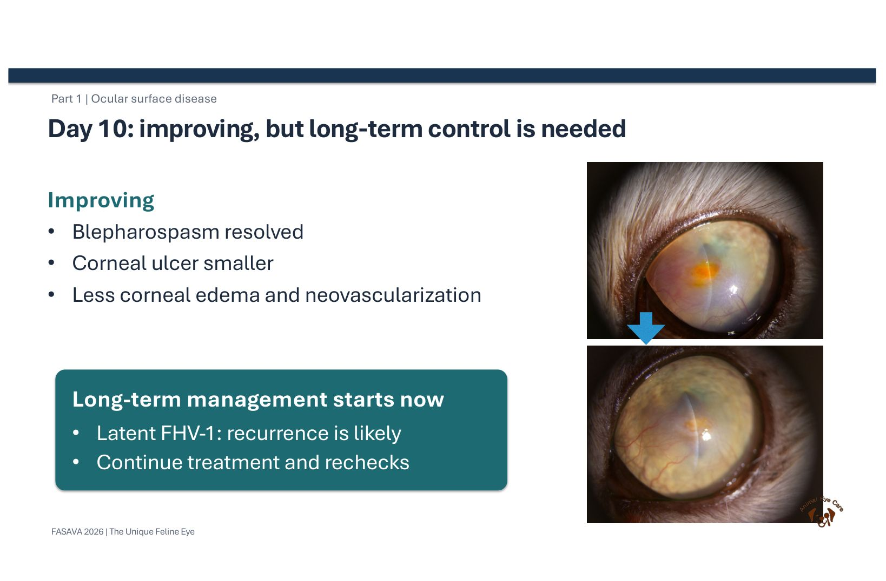
- 主訴：左眼久不癒合病灶；左眼反覆瞇眼約 1 年，ofloxacin 與玻尿酸（hyaluronate）點眼無效，之後出現新生血管（neovascularization）與變色。
- 檢查：中度眼瞼痙攣（blepharospasm）、結膜充血（conjunctival hyperemia）、中央基質性角膜（cornea）潰瘍（ulcer）、角膜新生血管、水腫，眼內無明顯變化。
- 支持 FHV-1：長期反覆、多貓家庭、未施打疫苗、無其他異常、基質潰瘍；尚未排除：其他感染（如披衣菌（Chlamydia））、異物（foreign body）、外傷。
- 治療：IDU 點左眼每日 6 次；玻尿酸鈉（sodium hyaluronate）點左眼每日 6 次；FortiFlora；改善居家環境減壓。
- 第 10 天：眼瞼痙攣消失、潰瘍縮小、水腫與新生血管減少；但長期管理從此開始（潛伏（latency），復發可能）。
病例 2「Neko」：米克斯，10 歲，已去勢公
📎 以下為講義頁面截圖，原始頁碼：講義 p.26–28（初診）、p.31–34（第 43、75 天兩眼照片）。
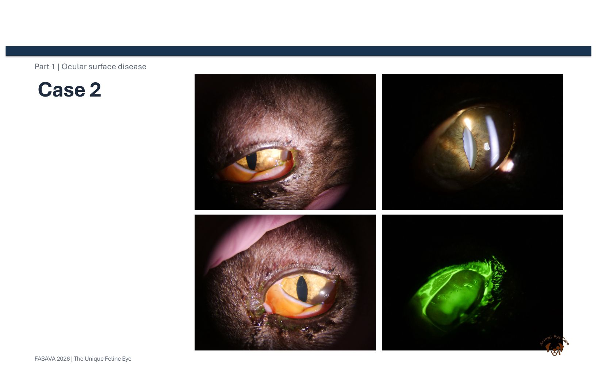
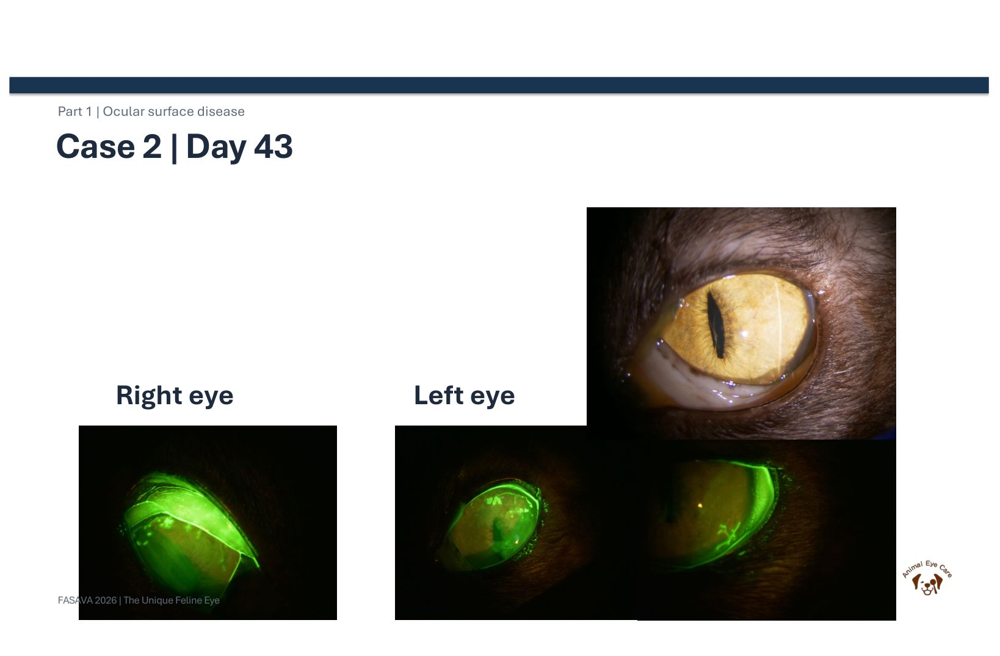
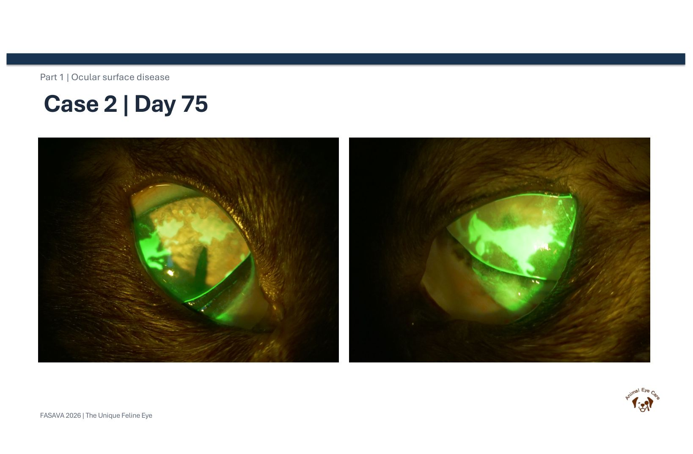
- 病史：5 個月前切除胃淋巴瘤（lymphoma），正在化療；左眼結膜水腫（chemosis） 1 個月，頻繁點 azulene 與 bromfenac 眼藥並口服類固醇。
- 檢查：嚴重眼瞼痙攣、結膜充血與水腫、第三眼瞼（third eyelid）糜爛、樹枝狀角膜潰瘍；無前房閃輝（aqueous flare）、眼壓（intraocular pressure, IOP）正常、眼底（fundus）無異常。
- 診斷：角膜結膜炎——FHV-1＋免疫抑制（腫瘤（tumor）、化療、類固醇）＋不當使用消炎眼藥。
- 處方思路：第三眼瞼糜爛 → 懷疑眼藥毒性，避免一切刺激性藥物、盡量無防腐劑（preservative）、減少用藥；口服 famciclovir 的壓力 vs. 腫瘤進展要權衡。開 ofloxacin 左眼每日 3 次、Hyalein Mini 0.3% 雙眼每日 3–6 次、繼續 prednisolone。
- 第 43 天：整體狀況惡化、眼藥幾乎沒點；雙眼樹枝狀潰瘍，加口服 famciclovir。第 75 天：更差，出現地圖狀潰瘍，加 IDU，貓死亡。
- 整體狀況或免疫差，FHV-1 就控制不住——支持免疫是治療關鍵。
- 不當處置會讓角膜結膜炎更糟：隨意用 NSAID 或類固醇眼藥、IDU 可能刺激、防腐劑毒性。
瀰漫性虹膜黑色素瘤（FDIM） Feline diffuse iris melanoma
認得虹膜（iris）色素沉著背後的危險腫瘤（tumor），並決定何時摘除（enucleation）。
Recognizing the dangerous tumor behind iris pigmentation.
基本認識
- 貓最常見的眼內腫瘤；虹膜表面平坦的色素沉著，數月到數年進展。
- 可繼發青光眼（secondary glaucoma）；轉移（metastasis）率 19–63%：肝、肺、脾、淋巴結、骨。
- 早期只有色素；晚期全身轉移與死亡。
病理分期：虹膜黑色素沉著（iris melanosis） → 早期 FDIM → 晚期 FDIM
📎 對照圖片請回看原講義 PDF：講義 p.41–42（組織切片）、p.47；上方圖為 Kayes 2025 原圖。
| 階段 | 組織學特徵（Kayes 2025） | n | 平均年齡（歲） | 繼發青光眼 | 有絲分裂（mitotic figures）數／HPF（中位） | 轉移 |
|---|---|---|---|---|---|---|
| 虹膜黑色素沉著（melanosis） | 發育不良的黑色素細胞排在虹膜前基質最多三層，未侵犯下方基質 | 7 | 9.4 | 0 | 0 | 0 |
| 早期 FDIM | 腫瘤性黑色素細胞侵犯虹膜基質——這一點定義良性轉惡性 | 13 | 8.45 | 2* | <1* | 0 |
| 晚期 FDIM | 浸潤虹膜、睫狀體（ciliary body）與鞏膜（sclera）；侵犯鞏膜靜脈叢（scleral venous plexus）被認為是血行轉移途徑 | 13 | 12.8* | 9* | 7* | 4 |
* 具統計差異（p < 0.05）。晚期 FDIM（n = 13）局部侵犯：鞏膜靜脈叢 9/13（69%）、脈絡膜（choroid） 5/13（38%）、虹膜角膜角／小樑網 3/13（23%）、鞏膜外層 3/13（23%）；轉移（肝、脾、肺）確認或疑似 4/13（31%）。Kaplan–Meier：晚期 FDIM 存活顯著較短（p = 0.04），虹膜黑色素沉著與早期 FDIM 兩條曲線分不開。資料來自 Kayes D, et al. Sci Rep. 2025;15:26218（講義標示為 CC BY 4.0）。

從黑色素沉著進展為早期 FDIM 的轉變難以辨識，理學檢查上兩者看起來一樣（講義用 4 隻組織學確診的貓說明）。
下方講義 p.49 的照片在說什麼：四隻貓的眼睛各一張外觀照，A、C 為早期 FDIM，B、D 為虹膜黑色素沉著，四隻都經組織病理確診。照片上都是虹膜表面平坦的褐色色素斑，單看外觀無法分辨哪一隻是早期 FDIM，所以講義接著問：「沒有組織病理，能診斷這些病灶嗎？」——答案是目前只能靠切片與 OCT 等輔助，且都不完美（見下一節）。
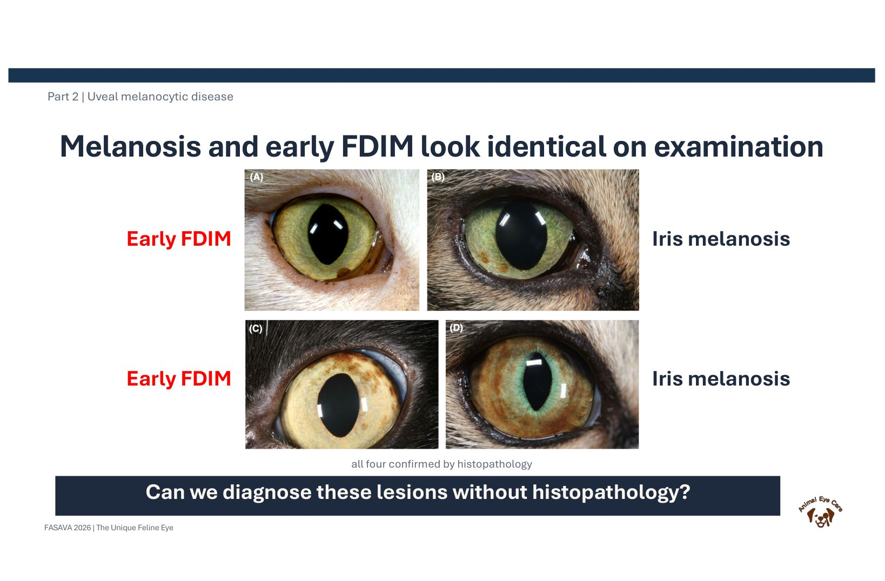
什麼時候摘除？新資料怎麼說
- 「虹膜色素沉著」不是單一風險類別；早摘除與延後摘除都有取捨，很多患眼在決策時仍有視力。
- Gregorio 2026：92 隻貓回顧，其中 36 隻有追蹤，存活沒有差異（摘除 73% vs. 監測 64%，無顯著）。
- 但兩組由臨床醫師選擇、監測組沒有組織學——僅能產生假說：FDIM 危險，但風險並不均一。
- 早期摘除的存活接近對照（Kalishman 1998，講義引用）。
決策、記錄與監測
- 進展：大小、變深、擴散
- 結構：增厚、瞳孔變形（dyscoria）、虹膜角
- 眼睛：眼壓（intraocular pressure, IOP）、發炎、視力
- 背景：年齡、分期、對側眼
- 追蹤大小、表面、瞳孔形狀
- 增厚時加做超音波（ultrasound）
- 在疼痛或青光眼（glaucoma）之前就跟飼主溝通
病例 3「Moco」：4 年紅眼的失明牛眼（buphthalmos） — Case 3 “Moco”
📎 以下為講義頁面截圖，原始頁碼：講義 p.45–46（臨床照片、超音波、摘除眼球 H&E）。

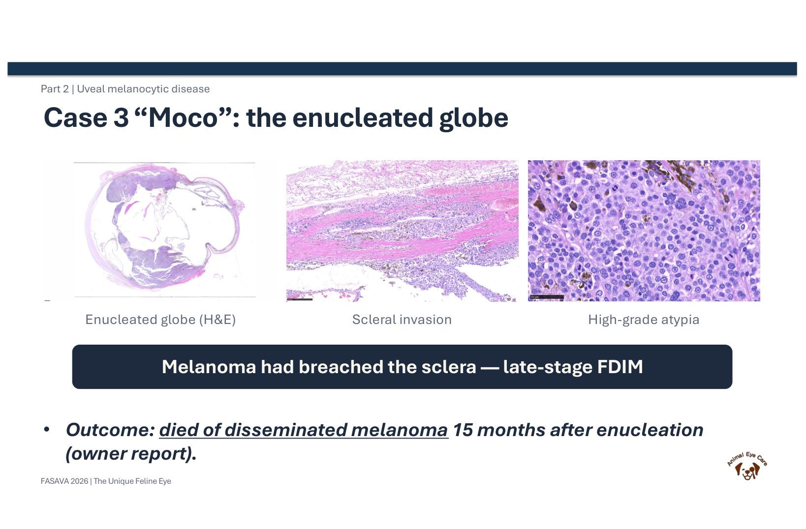
- 拔牙後右眼紅 4 年，眼內注射無效；牛眼、瀰漫性角膜水腫（corneal edema）、廣泛前粘連（anterior synechia），威嚇、眩光（dazzle reflex）、瞳孔光反射皆無。
- 超音波：眼球 28.8 mm、水晶體脫位（lens luxation）、虹膜到脈絡膜寬廣高回音團塊；左眼 4 點鐘方向淡褐色虹膜色素，視力正常。
- 推定腫瘤性繼發青光眼 → 摘除；組織顯示腫瘤突破鞏膜（晚期 FDIM）；摘除後 15 個月死於擴散性黑色素瘤（melanoma）（飼主回報）。
FDIM 的臨床線索、轉移與「摘除 vs 保眼」的爭議
- 臨床線索：沒有任何臨床檢查能可靠分開黑色素沉著與黑色素瘤；眼壓升高、瞳孔變形（dyscoria）、虹膜增厚只是提示。唯一確定的診斷是組織學（histology），依據是腫瘤細胞侵犯虹膜基質（stroma）。
- 為什麼很少做虹膜切片：貓虹膜的切開式切片有醫源性傷害眼球的風險，臨床上多半改用監測早期病灶。這與講義「轉診層級顯微手術、陰性結果不能安心」互相印證。
- 轉移：以血行為主，最常到肝、肺、腎，報告比例 19–63%；經鞏膜靜脈叢（scleral venous plexus）擴散是可能路徑；摘除後 1–3 年仍可能出現轉移。免疫組織化學標記 Melan-A、E-cadherin、PNL2 可能有預後價值。
- 標準處置的立場與講義的差別：該回顧（Kayes & Blacklock 2022）寫摘除是標準治療，不建議虹膜切除（iridectomy）或 Nd:YAG 雷射光凝，因為腫瘤有高轉移潛力且呈瀰漫性；保眼治療的復發與轉移風險較高。建議摘除的情況包括：快速生長、瞳孔異常、虹膜角侵犯、青光眼。MSD 獸醫手冊則提到局部病灶可考慮切除或雷射消融。講義第 58 頁的二極體雷射（Fuchs 2023）是「飼主拒絕摘除時的選項」，兩者並不矛盾，但雷射屬較新、非標準的選項，使用前要與飼主講清楚復發與轉移風險。（Feline Uveal Melanoma Review；MSD Vet Manual；Vet Times）
- 我沒有找到單一份共識指南規定摘除時機，所以講義裡「何時摘除」本質上仍是臨床判斷，且新研究（Gregorio 2026）也只是產生假說。
FDIM 的診斷工具與雷射治療 Diagnostics and laser therapy
不靠組織學能不能分辨黑色素沉著與早期 FDIM？目前工具各有侷限。
虹膜切片（iris biopsy） — Iris biopsy: what it involves
- 手術顯微鏡下做部分虹膜（iris）切除；術前以前列腺素（prostaglandin）類藥物縮瞳（miosis）；Featherstone 2020 在 7 隻虹膜色素沉著貓施行。屬轉診層級的顯微手術。
| 研究 | 設計 | 結果 |
|---|---|---|
| Featherstone 2020 | 活體，7 隻，臨床上無法區分的病灶 | 兩隻切片為 FDIM 者，摘除（enucleation）後都被確認（2/2）；黑色素沉著的貓沒有眼球組織學、追蹤短。 |
| Beetz 2026 | 離體，17 顆摘除眼球，8 位病理師 | 切片與眼球一致率 81.6%，約等於隨機水準；多為晚期病灶，檢體 <1 mm。 |
支持現在就摘除（基質侵犯定義 FDIM）。
不足以支持「繼續等」：敏感度（sensitivity）從未被測量、檢體小且侵犯呈斑塊狀；真正的黑色素沉著也長得像原位黑色素瘤（Kayes 2025）。
用切片來「找摘除的理由」；陰性結果之後仍要持續監測。
病例「Popo」：蘇格蘭摺耳，1 歲 4 個月，結紮母
📎 以下為講義頁面截圖，原始頁碼：講義 p.52–55（初診、切片、術後 2 個月與約 5 年追蹤照片）；p.49 為四隻組織學確診貓的外觀對照。

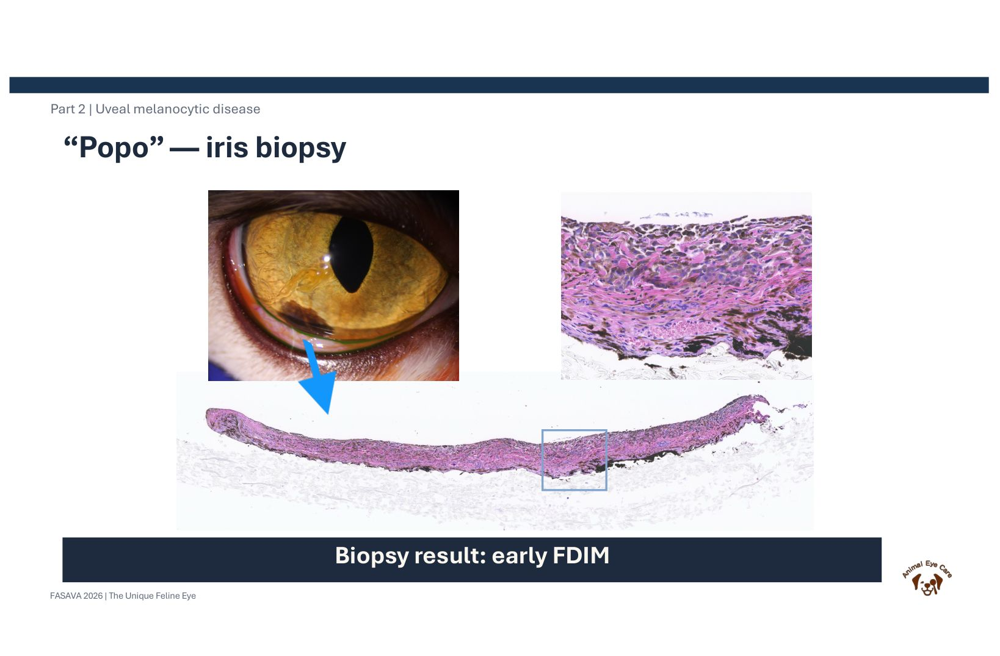
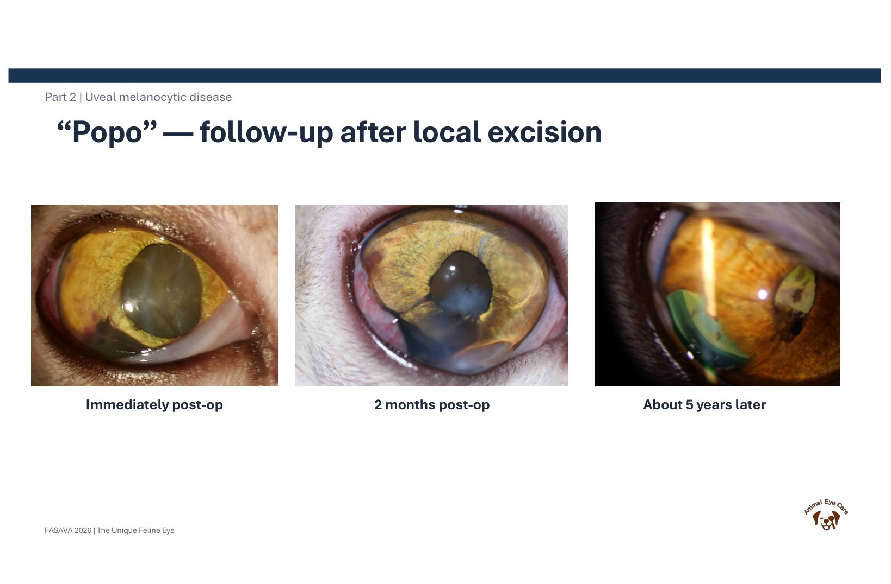

- 5 個月間病灶變大 → 局部切除；虹膜切片結果為早期 FDIM。
- 術後 2 個月與約 5 年追蹤；5 年後多處色素擴散到虹膜其他區域，因年輕而建議摘除。
前眼節 OCT（AS-OCT） — Role of anterior segment OCT
📎 對照圖片請回看原講義 PDF：講義 p.56–57（OCT 與示意圖）。
AS-OCT 顯示結構、但不能確診；非侵入性虹膜橫斷面，可能顯示細微相對增厚，最適合灰色地帶（Komatsu 2024；Lanzendörfer 2026）。
| 階段 | PN 比值（病灶 ÷ 對側虹膜厚度） | AS-OCT 表現 |
|---|---|---|
| 正常虹膜 | — | 三層：基質、肌肉、後上皮 |
| 虹膜黑色素沉著（iris melanosis） | ≈ 1.0（0.99） | 表面薄的高反射線，厚度不變 |
| 早期 FDIM | ≈ 1.3（1.28） | 基質增厚，表面線消失，層次仍可見 |
| 晚期黑色素瘤（melanoma） | ≈ 1.6（確診黑色素瘤 1.58；後緣為外推估計） | 表面明亮增厚，後方陰影遮住虹膜後面 |
PN 比值隨侵犯上升；以同一台機器連續追蹤。講義的示意圖是講者依發表描述手繪、不是實際 OCT 影像；OCT 單獨仍不能決定是否摘除。
經角膜（cornea）二極體雷射（Fuchs 2023, JAVMA）
適用於「飼主不願摘除、病灶有文獻記載進展」的低度病灶。回溯性（retrospective）研究（2000–2018，單一轉診團隊），雷射前沒有組織學；810 nm 經角膜二極體、300–800 mW、全身麻醉（general anesthesia）；以新的臨床評分 PPSS 分級（講義未展開全名）。
| 項目 | 結果 |
|---|---|
| 1 年存活 | 96%（240/250 有追蹤） |
| 需重複雷射（進展） | 18.5%，中位 18 個月 |
| 推定因轉移（metastasis）死亡 | 2/317，兩隻皆 PPSS 4 且有青光眼（glaucoma） |
| 術後青光眼 | 整體 18/356（5%）；PPSS ≤ 3：2.2%（6/265）、PPSS ≥ 4：17.8%（8/45）；12 隻失明後摘除 |
| 其他併發症 | 角膜潰瘍（ulcer） 7%、葡萄膜炎（uveitis） 1%、內皮水腫 0.8%；所有治療眼都有瞳孔變形（dyscoria）與光反射減弱（預期） |
中度與晚期 FDIM 轉移風險真實；若目標是治癒，在早期黑色素瘤階段摘除。AS-OCT 與切片雖不完美但可輔助分期。即使是黑色素沉著，在家屬焦慮（即使眼睛仍有視力）或貓年輕且病灶進展時，也建議摘除——趁繼發青光眼（secondary glaucoma）或眼痛出現之前處理。
貓的視網膜剝離：鑑別診斷 Retinal detachment in cats: differential diagnosis
視網膜剝離（retinal detachment）是全身性疾病的徵象；血壓（blood pressure）與眼底（fundus）是第一步。
Differential diagnosis, with systemic hypertension as the leading cause.
- 漿液性（滲出性（exudative））剝離為主，處理以內科為主、治療原發疾病。
- 全身性高血壓最常見，多繼發於 CKD 或甲狀腺機能亢進（hyperthyroidism）。
- 要排除感染與腫瘤（tumor）：貓傳染性腹膜炎（FIP）、弓形蟲（Toxoplasma）、隱球菌（Cryptococcus）、淋巴瘤（lymphoma）。
- 及時降血壓可恢復視力，即使完全剝離視網膜（retina）也可能貼回。
視網膜剝離＝神經感覺視網膜（從光受器（photoreceptor）層到內界膜）與視網膜色素上皮（RPE）分離；光受器失去脈絡膜（choroid）供應與廢物清除，導致繼發性退化。
分類 — Classification of retinal detachment
| 類型 | 原因 | 治療 |
|---|---|---|
| 孔源性（rhegmatogenous）原發 | 玻璃體（vitreous）退化、視網膜裂孔、視網膜鋸齒緣離斷、視神經缺損 | 局部：雷射視網膜固定術（laser retinopexy）；廣泛：視網膜復位手術 |
| 孔源性 繼發 | 外傷、發炎、眼內手術（尤其白內障）、青光眼（glaucoma） | 同上 |
| 非孔源性 滲出性 | 高血壓（hypertension）、後葡萄膜炎、腫瘤、高黏滯症候群（hyperviscosity syndrome）、凝血障礙（coagulopathy） | 治療原發疾病；找不到原因時可試類固醇 |
| 非孔源性 牽引性（tractional） | 玻璃體出血、增生膜（視網膜裂孔、糖尿病視網膜病變）、永存透明動脈（persistent hyaloid artery） | 治療原發疾病 |
孔源性剝離常見，常需手術。
漿液性（滲出性）為主，多數內科處理。貓的主要原因：高血壓、感染、腫瘤、外傷、先天異常。
縮小鑑別的三個問題（講者臨床經驗法則，非驗證過的診斷準則）
| 問題 | 線索 |
|---|---|
| 單側或雙側？ | 雙側 → 全身性（高血壓、感染、淋巴瘤、高黏滯）；單側 → 還要想外傷、眼內手術史、先天異常。注意：感染常從單側或不對稱開始（病例 4、5）。 |
| 年齡與背景 | 老貓：高血壓（CKD、甲亢（hyperthyroidism））、淋巴瘤；年輕、收容所、多貓：FIP；曾在外流浪：弓形蟲、隱球菌。 |
| 發炎與全身症狀 | 發炎少、出血、血管彎曲（vessel tortuosity） → 高血壓；閃輝、纖維蛋白、角膜後沉積物（KP）、肉芽腫（granuloma） → 感染性或腫瘤性葡萄膜炎（uveitis）；發燒、高球蛋白血症（hyperglobulinemia）、體重減輕 → 全身檢查。 |
→ 先量血壓、檢查眼底。（引用 Maggio 2000, JAVMA）
後葡萄膜炎的感染原因（犬貓）
| 分類 | 病原 |
|---|---|
| 病毒 | 犬瘟熱、犬疱疹病毒、貓冠狀病毒（FIP）、FIV、FeLV |
| 蟲媒 | 艾利希體（Ehrlichia）、洛磯山斑點熱（Rickettsia rickettsii）、巴東體（Bartonella） |
| 細菌 | 鉤端螺旋體（Leptospira）、布氏桿菌（Brucella） |
| 黴菌（fungal） | Acremonium、Aspergillus、Blastomyces、Histoplasma、Cryptococcus、Coccidioides、Candida |
| 藻類 | Prototheca |
| 原蟲 | 弓形蟲、Neospora、Leishmania |
| 寄生蟲 | Toxocara、蠅蛆（眼蠅蛆症）、犬心絲蟲（Dirofilaria） |
貓的主要考量：FIP、弓形蟲、全身性黴菌（尤其隱球菌）。
病例 4–6：感染與腫瘤
📎 以下為講義頁面截圖，原始頁碼：FIP：講義 p.67–68（含 OCT 視網膜血管炎）；隱球菌：p.69；淋巴瘤：p.71。
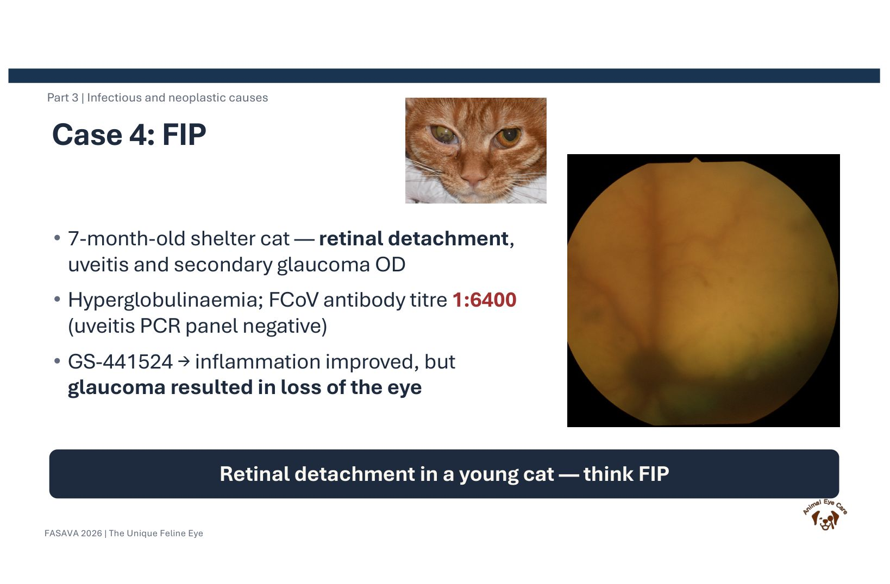
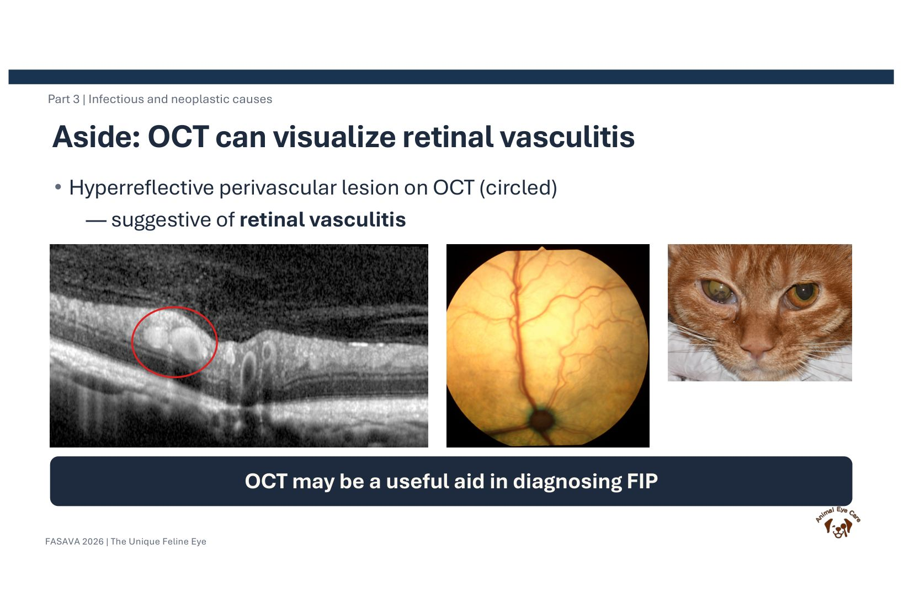
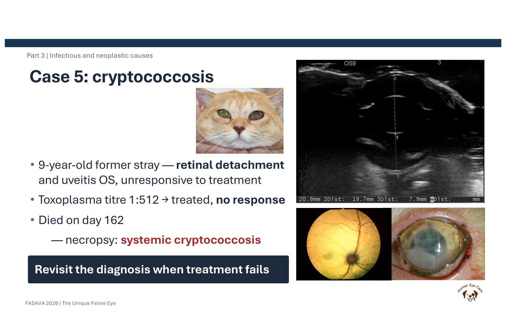
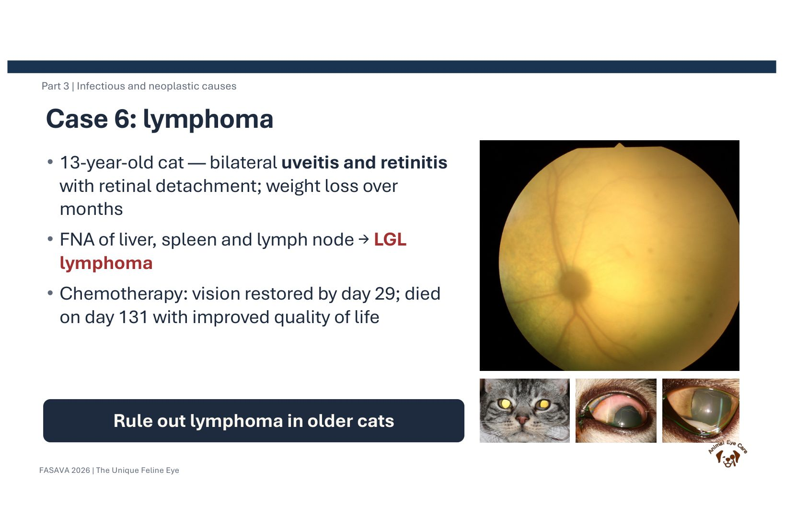
| 病例 | 病史與發現 | 結果與教訓 |
|---|---|---|
| 4｜FIP | 7 月齡收容所貓；右眼視網膜剝離、葡萄膜炎、繼發青光眼（secondary glaucoma）；高球蛋白血症；FCoV 抗體效價 1:6400（葡萄膜炎 PCR panel 陰性） | GS-441524 後發炎改善，但青光眼導致失去眼球。年輕貓視網膜剝離，想到 FIP。另：OCT 可見視網膜血管周圍高反射病灶，提示視網膜血管炎（vasculitis），可能輔助診斷 FIP。 |
| 5｜隱球菌 | 9 歲前流浪貓；左眼視網膜剝離＋葡萄膜炎、治療無反應；弓形蟲效價 1:512，治療後無反應 | 第 162 天死亡，剖檢（necropsy）為全身性隱球菌症。治療失敗時要回頭重新想診斷。 |
| 6｜淋巴瘤 | 13 歲；雙側葡萄膜炎、視網膜炎＋剝離，數月體重減輕；肝、脾、淋巴結 FNA → 大顆粒淋巴球（LGL）淋巴瘤 | 化療後第 29 天視力恢復，第 131 天死亡但生活品質改善。老貓要排除淋巴瘤。 |
腫瘤性原因：腫瘤浸潤（淋巴瘤、黑色素瘤（melanoma）等）、發炎或繼發出血；淋巴瘤是貓最常見的繼發性眼內腫瘤；原發視網膜淋巴瘤極少見，通常是葡萄膜炎繼發的漿液性（serous）剝離。治療：抗發炎、治療腫瘤（化療或緩和）、必要時摘除（enucleation）。
高血壓脈絡視網膜病變 Hypertensive chorioretinopathy
流行病學、病理生理、診斷、治療與預後。
Epidemiology, pathophysiology, diagnosis, treatment and prognosis.
視網膜（retina）病變 vs 脈絡膜（choroid）病變 — Hypertensive retinopathy vs choroidopathy
視網膜血管自我調節並形成內層血液–視網膜屏障；持續高血壓（hypertension） → 小動脈收縮 → 自我調節失敗、滲漏與出血；表現為視網膜出血（retinal hemorrhage）、血管彎曲（vessel tortuosity）、管徑不一、視網膜水腫。
脈絡膜血管自我調節有限（交感控制）；脈絡膜微血管缺血與纖維素樣壞死 → RPE（外層屏障）受損 → 視網膜下滲出 → 急性泡狀（漿液性（serous））剝離。
貓的高血壓視網膜病變主要由脈絡膜損傷造成（Maggio 2000）；與人類惡性高血壓的脈絡膜病變（如 Elschnig 斑）相似——此為講者的詮釋。
全身性高血壓的原因 — Causes of systemic hypertension
| 原因 | 資料（講義） |
|---|---|
| 慢性腎臟病（CKD） | 診斷時合併 60.4%（Cirla 2021）；CKD 貓 19.4% 有收縮壓高血壓（Syme 2002），與血漿鉀呈負相關 |
| 甲狀腺機能亢進（hyperthyroidism） | 合併 28.9%；治療前 27% 高血壓；放射碘後 49% 恢復正常，9.5% 原本正常者變成高血壓（Stammeleer 2024） |
| CKD ＋ 甲亢（hyperthyroidism） | 7.6% |
| 肥厚性心肌病（HCM） | 3.1% |
| 原發性高醛固酮症（primary hyperaldosteronism） | 高血壓合併低血鉀（hypokalemia）時懷疑 |
| 特發性（idiopathic） | 69 隻中 38 隻找不到明確原因（其中 26 隻輕度氮血症（azotemia）；Maggio 2000） |
| 其他 | 糖尿病、腎上腺皮質機能亢進等 |
Cirla 2021：225 隻高血壓貓、前瞻性（prospective），58.6% 有眼底異常。高血壓貓較老（13.0 vs 9.6 歲），視網膜病變比例 48% vs 3%（Chetboul 2003）。
眼底（fundus）與影像
📎 以下為講義頁面截圖，原始頁碼：講義 p.75–77（血管彎曲、出血、OCT 與超音波）。
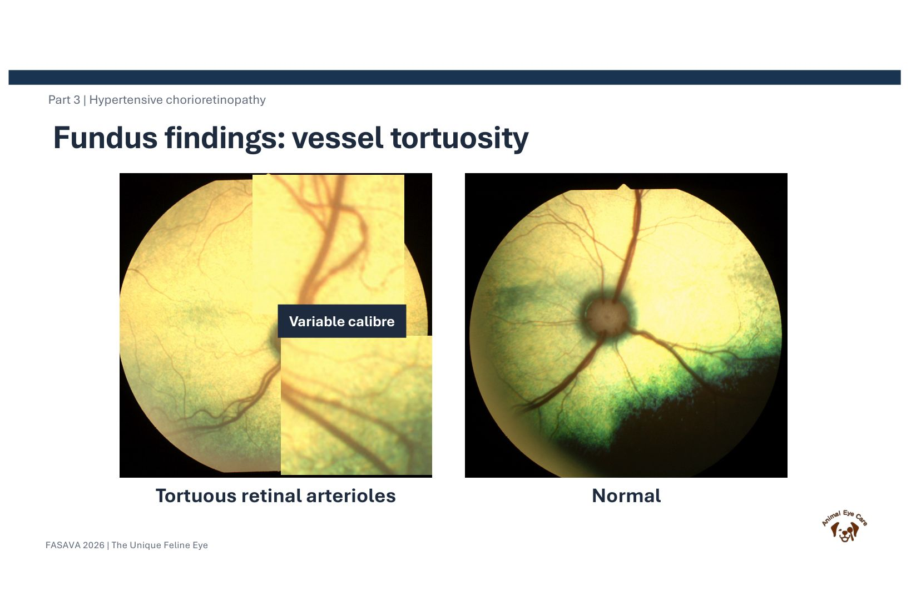
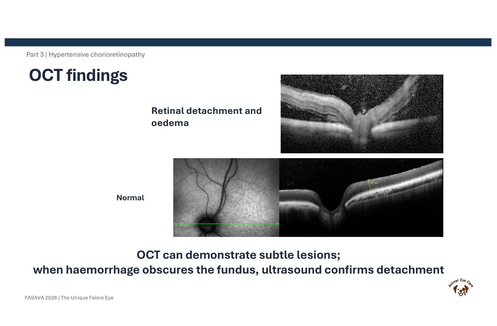
- 小動脈彎曲、管徑不一、視網膜出血（可進展為前房出血（hyphema）與繼發青光眼（secondary glaucoma）；Carter 2019）、泡狀（bullous）剝離。
- OCT 可顯示細微病灶；出血遮住眼底時，用超音波（ultrasound）確認剝離。
診斷流程 — Diagnosis of hypertensive eye disease
血壓分類與治療時機（ACVIM 2018） — Classification and when to treat
| 類別 | 收縮壓 SBP（mmHg） | 未來 TOD 風險 |
|---|---|---|
| 正常 | <140 | 極小 |
| 高血壓前期 | 140–159 | 低 |
| 高血壓 | 160–179 | 中 |
| 重度高血壓 | ≥180 | 高 |
- 有 TOD（如視網膜病變）且 SBP >160：找原發疾病並開始治療。
- 無 TOD：≥180 → 14 天內重複兩次、再檢查 TOD；160–179 → 8 週內重複兩次；<160 → 3–6 個月複查（recheck）。
- 目標 SBP <160（理想 <140），避免低血壓（hypotension）。
- 篩檢（ISFM 2017）：健康貓 7–10 歲至少每年一次；≥11 歲每 6–12 個月；CKD 或甲亢更頻繁；適應環境後取 5–7 次平均。
- ACVIM 2007 舊分類：<150 極小、150–159 輕度、160–179 中度、≥180 重度。
視網膜剝離或出血本身就是 TOD → 不必等重複測量就開始治療。
治療（講義內容） — Treatment of hypertensive eye disease
| 藥物 | 用法 | 備註 |
|---|---|---|
| Amlodipine besylate（鈣離子通道阻斷劑） | 起始 0.625 mg/cat PO q24h（2.5 mg 錠的 ¼）；SBP >200 mmHg 可 1.25 mg/cat q24h | 重度 TOD（如視網膜剝離）從 amlodipine 開始，因起效快。 |
| Benazepril 或 enalapril（ACE 抑制劑） | — | 單用 amlodipine 不足時加上。 |
| Telmisartan（ARB） | — | 單用或合併（Glaus 2019）。 |
- 監測：開始後 1–3 天複查；注意低血壓（SBP ≤120 mmHg）；目標 SBP <160（理想 <140）；監測腎功能（renal function）、電解質（electrolytes）與 UPC；視網膜復位前密集複查。
- 同時治療原發疾病。
病例 7：米克斯，15 歲 6 個月，結紮母
📎 以下為講義頁面截圖，原始頁碼：講義 p.81–89（眼底、超音波與 OCT、第 36／91／213 天追蹤照片）。
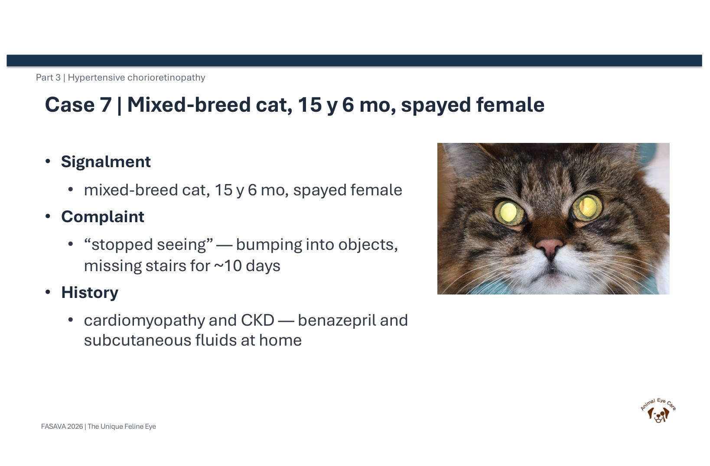
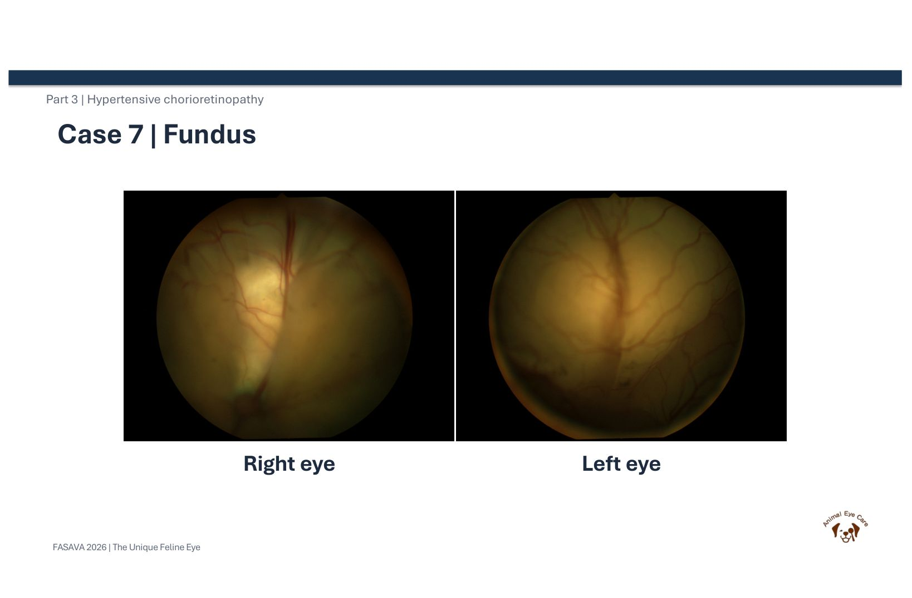
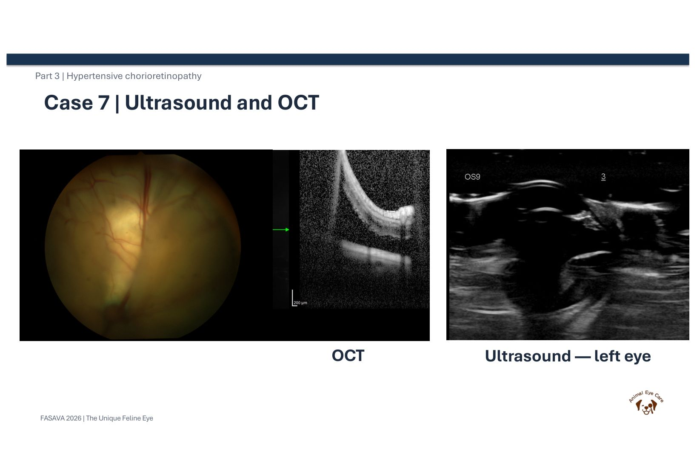
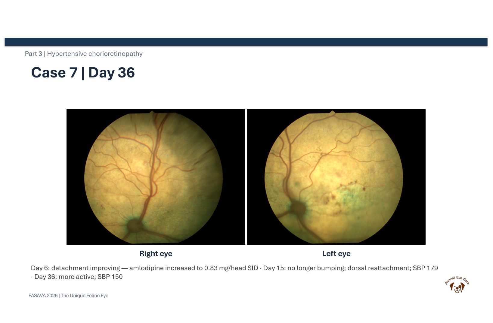
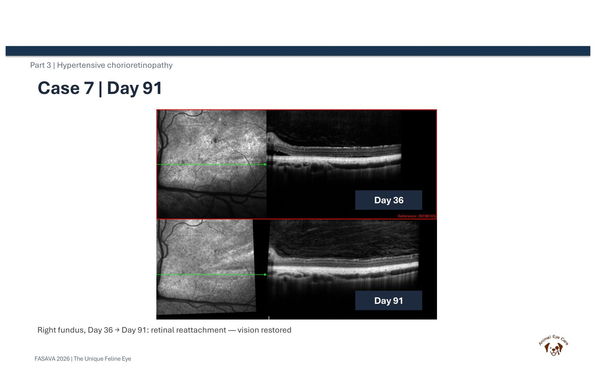
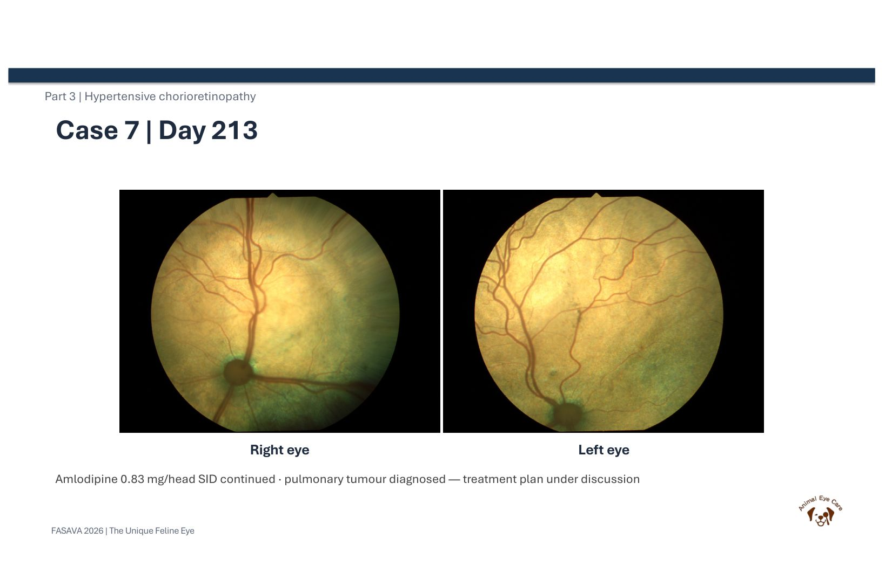
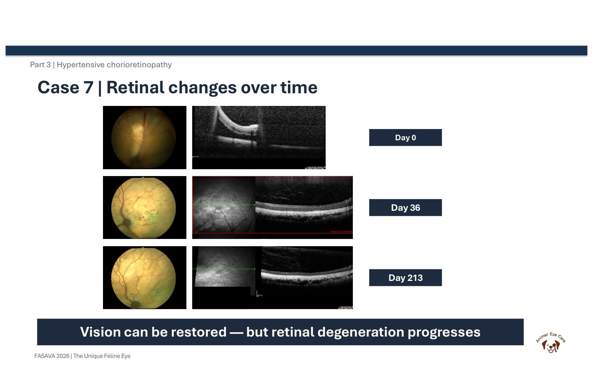
- 約 10 天「看不見」：撞東西、踩空階梯；既往心肌病與 CKD，在家用 benazepril 與皮下輸液。
- CBC 無異常；生化：BUN 49.4↑、creatinine 2.4↑（CKD）、T-chol 296↑；血壓 249/179 mmHg（5 次平均，MAP 205）；做了貓葡萄膜炎 panel。
- 診斷：雙側泡狀視網膜剝離，繼發於全身性高血壓。治療：amlodipine 0.625 mg/head SID。
- 追蹤：第 6 天剝離改善、amlodipine 增為 0.83 mg/head SID；第 15 天不再撞東西、背側復位、SBP 179；第 36 天更活潑、SBP 150；第 91 天右眼視網膜復位、視力恢復；第 213 天持續 0.83 mg SID，另診斷出肺腫瘤。
- 帶回訊息：視力可恢復，但視網膜退化會持續進展。
預後（Young 2019, Vet Ophthalmol） — Prognosis: how much vision returns?
- 入院時失明：57.6% 恢復視力（76/132 眼）
- 最後評估威嚇反應（menace response）陽性：60%（101/176 眼）
- 追蹤 >6 個月：74%（34/46 眼）
- 入院時威嚇反應陽性：之後有視力的可能性是失明 <2 週的 17 倍、>2 週的 37 倍
- 視網膜完全復位所需時間
- 性別：公貓 4.2 倍（女性占 62.5%）
88 隻高血壓脈絡視網膜病變貓（回溯性（retrospective）），61% 入院時雙眼失明。早期病灶反應較好；視網膜貼回後視力可回來，但光受器（photoreceptor）退化可能讓視力不能完全恢復——失明越短，結果越好 → 早期發現、早期治療（講者詮釋）。
- 眼表（ocular surface）：先想 FHV-1，控制不是治癒。
- 虹膜（iris）色素沉著：記錄、評估風險，再決定手術。
- 視網膜剝離：是全身性徵象，早期治療高血壓。
血壓怎麼量，與 amlodipine 劑量的換算
- 量測：ACVIM 小組的建議是先捨棄第一次讀值，再連續取多次變異小的讀值，理想 5–7 次；不同研究用高解析度示波法（HDO）或都卜勒（Doppler）；有診所主張只用 Doppler，因為最接近直接動脈測量。講義的「適應環境後取 5–7 次平均」與此一致。
- 門檻有版本差異：文獻裡有 <140 正常、140–159 高血壓前期、≥180 第二期的分法（對應講義 ACVIM 2018），也有用 <150/95 當低風險的較舊分法——引用時要註明版本。標的器官主要是腎、眼、腦、心；沒有 TOD 通常需要在不同時間兩次以上確認高血壓才開始治療，有 TOD 則直接治療。
- Amlodipine：文獻常見貓劑量是 0.125–0.25 mg/kg PO q24h；講義的 0.625 mg/cat 以 4 kg 貓換算約 0.16 mg/kg，落在這個範圍內。有診所報告平均收縮壓下降 28–55 mmHg，建議 1–2 週內複查、目標 <160；研究也指出診斷時血壓越高，常需要較高劑量。美國 FDA 已核准貓用 amlodipine 咀嚼錠，標示引用 ACVIM 2018，並報告眼底病灶改善。（PMC4895406；RVC 研究；CVCA 通訊；FDA 標示）
- 注意：上述是二手與實務資料，我沒有找到 ACVIM 2018 共識原文，貓的量測細節與門檻請以原文為準。
縮寫對照表 Abbreviations
複習前可以先對照一下本頁用到的縮寫全名。
| OCT Optical Coherence Tomography（光學同調斷層掃描）：用近紅外光做出眼球組織的非侵入性橫斷面影像，像「光學版超音波」，解析度高到能分出視網膜與虹膜的各層；前眼節用的叫 AS-OCT，眼底用的看視網膜是否剝離、水腫。 | |||
| FHV-1 | Feline Herpesvirus-1（貓疱疹病毒第一型） | FDIM | Feline Diffuse Iris Melanoma（貓瀰漫性虹膜黑色素瘤） |
| IDU | Idoxuridine（碘苷，抗病毒（antiviral）眼藥） | AS-OCT | Anterior Segment Optical Coherence Tomography（前眼節光學同調斷層掃描） |
| PN 比值 | 病灶虹膜（iris）厚度 ÷ 對側眼虹膜厚度（講義 OCT 指標） | PPSS | Fuchs 2023 使用的臨床評分（講義未展開全名） |
| PACK-CXL | Photoactivated Chromophore for Keratitis–Corneal Cross-Linking（角膜交聯（corneal cross-linking）） | RPE | Retinal Pigment Epithelium（視網膜色素上皮） |
| TOD | Target Organ Damage（標的器官損傷） | SBP | Systolic Blood Pressure（收縮壓） |
| CKD | Chronic Kidney Disease（慢性腎臟病） | HCM | Hypertrophic Cardiomyopathy（肥厚性心肌病） |
| FIP | Feline Infectious Peritonitis（貓傳染性腹膜炎） | FCoV | Feline Coronavirus（貓冠狀病毒） |
| LGL | Large Granular Lymphocyte（大顆粒淋巴球） | UPC | Urine Protein:Creatinine ratio（尿蛋白肌酸酐比） |
| MAP | Mean Arterial Pressure（平均動脈壓） | KP | Keratic Precipitates（角膜後沉積物） |
| PLR | Pupillary Light Reflex（瞳孔光反射） | ACVIM | American College of Veterinary Internal Medicine（美國獸醫內科學院） |
| ISFM | International Society of Feline Medicine（國際貓科醫學會） | ABCD | European Advisory Board on Cat Diseases（歐洲貓病諮詢委員會） |
練習題 Practice questions
以臨床情境呈現，先自行作答再點「顯示答案」核對。
沒有樹枝狀潰瘍不能排除 FHV-1，診斷是機率性的，反覆潰瘍就該用疱疹病毒思維。但短頭貓不能只想 FHV-1：短頭貓角膜（cornea）潰瘍勝算比（odds ratio, OR） 3.0、黑色壞死（sequestrum） 9.0（Frejlich 2025），要檢查內側眼角內翻（entropion）、淚膜（蒸發過強型乾眼（dry eye））、角膜感覺遲鈍，並排除披衣菌（Chlamydia）、異物（foreign body）與外傷。
講義病例：IDU 點眼每日 6 次（間隔至少 1 小時）；全身可用 famciclovir 90 mg/kg PO q12h；輔助：玻尿酸鈉（sodium hyaluronate）點眼（長期保護，症狀緩解後杯狀細胞（goblet cells）仍減少）、益生菌（SF68）、改善環境減壓。期望值：FHV-1 終身潛伏（latency），目標是控制不是根除，復發預期會發生；抗病毒藥只抑制複製，緩解後不要減量或停藥，每次復發要重新想有沒有其他原因。
多重因素：FHV-1＋免疫抑制（腫瘤（tumor）、化療、類固醇）＋不當消炎眼藥。第三眼瞼糜爛要懷疑眼藥毒性，避免一切刺激性藥物、盡量無防腐劑（preservative）、減少用藥；口服 famciclovir 的壓力要與腫瘤進展權衡。病例結局提醒：免疫差時 FHV-1 控制不住，免疫支持是關鍵，且 IDU 可能刺激。
風險評估：進展（大小、變深、擴散）、結構（增厚、瞳孔變形（dyscoria）、虹膜角）、眼睛（眼壓、發炎、視力）、背景（年齡、分期、對側眼）；連續攝影（serial photography）與增厚時加超音波（ultrasound）。溝通：FDIM 轉移（metastasis）率 19–63%、晚期存活顯著較短，但「虹膜色素沉著」風險並不均一（Gregorio 2026 存活無顯著差異，僅供假說）；在疼痛或青光眼（glaucoma）出現之前討論；病灶進展且貓年輕、或家屬焦慮，講者建議摘除（enucleation）。
切片陽性（FDIM）可支持摘除，但陰性不能當作可以放心等的理由：敏感度（sensitivity）從未被測量、檢體 <1 mm、侵犯呈斑塊狀，離體研究切片與眼球一致率 81.6%（約隨機水準），真正的黑色素沉著也像原位黑色素瘤（melanoma）。講者結論：用切片找摘除理由，陰性後仍要持續監測，可搭配 AS-OCT 與連續攝影。
先量血壓（blood pressure）、檢查眼底（老貓急性雙側失明）。鑑別三問：單側或雙側（雙側 → 全身性；但感染常從單側或不對稱開始）；年齡與背景（老貓：高血壓（hypertension）、淋巴瘤；年輕多貓：FIP；曾流浪：弓形蟲（Toxoplasma）、隱球菌（Cryptococcus））；發炎與全身症狀（發炎少、出血、血管彎曲（vessel tortuosity） → 高血壓；閃輝、纖維蛋白、KP、肉芽腫（granuloma） → 感染／腫瘤；發燒、高球蛋白、體重減輕 → 全身檢查）。再找原發疾病：CKD、甲亢（hyperthyroidism）、原發性高醛固酮症（primary hyperaldosteronism）。
視網膜剝離或出血本身就是 TOD，ACVIM 建議不等重複測量即治療。講義處方：amlodipine 0.625 mg/cat PO q24h 起始（SBP >200 可 1.25 mg/cat q24h）；重度 TOD 從 amlodipine 開始因起效快；單用不足時加 benazepril／enalapril 或 telmisartan。開始後 1–3 天複查，注意低血壓（SBP ≤120），目標 SBP <160（理想 <140），並監測腎功能（renal function）、電解質（electrolytes）、UPC；視網膜復位前密集複查，同時治療原發病。
治療無效要回頭重新想診斷：貓的感染考量為 FIP、弓形蟲、全身性黴菌（尤其隱球菌）；講義病例 5 最終為全身性隱球菌症，第 162 天死亡。另需排除淋巴瘤。視力部分：高血壓型剝離視力可回復（Young 2019：失明者 57.6% 恢復），但感染或腫瘤型預後取決於原發病，需先全身檢查再談視力。
參考資料 References
以下依講義投影片標示的出處整理，僅有作者、年份與期刊資訊，未逐篇核對全文、頁碼或 DOI（Kayes 2025 的 DOI 為講義所附）。
眼表（FHV-1）
- Frejlich 2025（法國轉診中心，n = 1,620；短頭（brachycephalic）貓角膜（cornea）潰瘍（ulcer）與黑色壞死（sequestrum））。
- Townsend et al. BMC Vet Res 2013;9:185（FHV-1 潛伏（latency））。
- Lappin 2009 J Feline Med Surg；ABCD guideline。
- Sebbag 2016（famciclovir 藥動學）。
- La Croix 2001 JAVMA；Anastassiadis 2022、Shukla 2024、Crasta 2024、Turicea 2024、Williams 2026、Dixon 2026 — Vet Ophthalmol（清創（debridement）、PACK-CXL、UV-C）。
葡萄膜（FDIM）
- Kayes D, et al. Sci Rep. 2025;15:26218. https://doi.org/10.1038/s41598-025-09632-5
- Featherstone HJ, et al. Vet Ophthalmol. 2020;23(2):269–276.
- Beetz S, et al. Vet Pathol. 2026;63(4):642–651.
- Kalishman JB, et al. Vet Ophthalmol. 1998;1:25–29.
- Komatsu H, … Kobayashi Y. Vet Sci. 2024;11(6):261.
- Lanzendörfer N, et al. Vet Ophthalmol. 2026;29(4):e70224.
- Fuchs AA, Giuliano EA, English R, Nadelstein B. J Am Vet Med Assoc. 2023;262(1):117–124.
- Gregorio 2026（摘除（enucleation）與監測之存活比較）。
眼底（fundus）與高血壓（hypertension）
- Maggio F, et al. J Am Vet Med Assoc. 2000;217:695–702.
- Cirla A, et al. Vet Ophthalmol. 2021;24:185–194.
- Syme HM, et al. J Am Vet Med Assoc. 2002;220:1799–1804.
- Stammeleer L, et al. J Vet Intern Med. 2024;38:1359–1369.
- Chetboul 2003（高血壓貓視網膜（retina）病變比例）；Glaus 2019（telmisartan）。
- Carter J. J Feline Med Surg. 2019;21:35–45.
- Acierno MJ, et al. ACVIM consensus statement. J Vet Intern Med. 2018;32:1803–1822；ISFM 2017 篩檢建議。
- Young WM, et al. Visual outcome in cats with hypertensive chorioretinopathy. Vet Ophthalmol. 2019;22:161–167.
藍色「補充」框的內容來自網路搜尋到的回顧與實務文章（連結在各框內），不是講義；本頁沒有另外核對講義內的數字與劑量；其中 My pick、presenter 詮釋標示的內容為講者個人觀點。